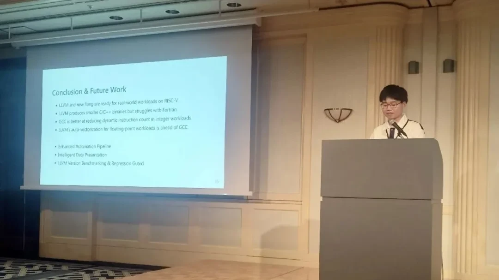
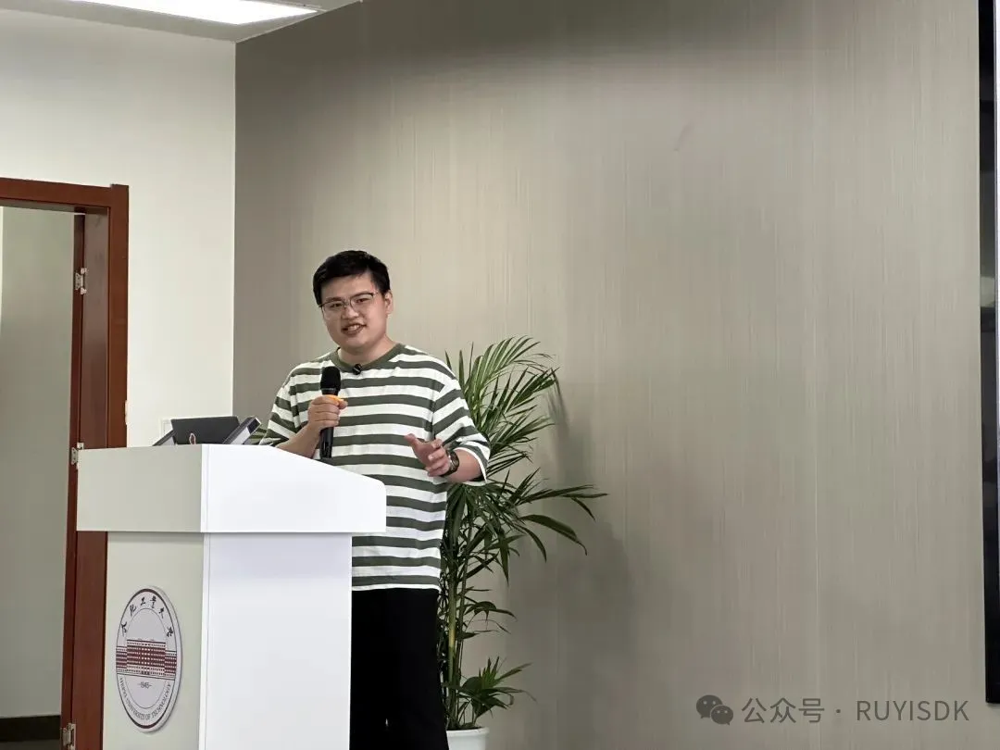
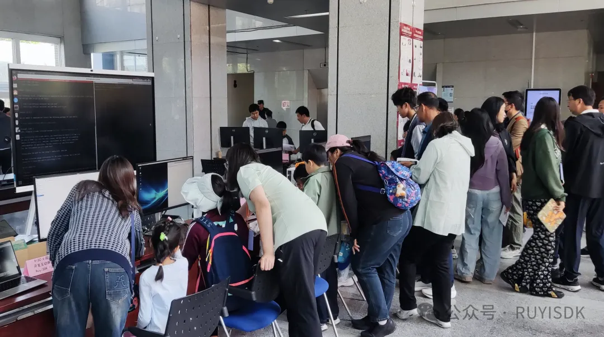

RuyiSDK
All-in-one integrated development environment for RISC-V architecture
Terminal

Engineer Yongtai Li Has Attended the 2025 AsiaLLVM Developer Conference in Tokyo to Discuss LLVM vs. GCC Performance on RISC-V
李永泰指出，LLVM/Flang 工具链已具备完整的 RISC-V SPEC CPU 构建能力，但在 Fortran 优化及特定 Pass 上仍需持续投入。未来将重点跟踪 LLVM 新版本演进，监测回...
Read more→

Open Source Promotion Plan 2025: Hefei University of Technology—Shihua Liao Shared His Journey to Becoming a GCC Developer
在分享中，廖仕华深入剖析了成为一名 GCC 开发者所需的关键技能和知识体系。他不仅对 GCC 这一重要的编译器工具的核心概念和编译流��程进行了清晰的阐述，更结合自身的丰富经验，讲解了开发者需要掌握的编程...
Read more→

2025 Public Science Day at the Institute of Software, Chinese Academy of Sciences: PLCT Lab Unveils the Power of RISC-V—Small Architecture, Big Potential!
Join the PLCT Lab to explore the mysteries and possibilities of software science!
Read more→